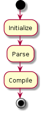

Application flow¶
Overview¶
To create documentation from your source code phpDocumentor takes a two-phase approach. The process is divided into the following phases:
- Parsing
- Responsible for analyzing the source code of a project (lexing and parsing), writing the results to an Object Graph and serializing the Object Graph to disk (to be used as Cache).
- Compiling
- Responsible for interpreting and augmenting the generated Object Graph, and create artifacts, such as HTML documents, based on the augmented Object Graph.

Activity Diagram¶
The following diagram intends to provide an overview of the actions executed by phpDocumentor when generating a complete set of documentation from start to finish.
As can be seen in the Introduction do all packages play a role in the complete execution of the application and is depicted in this diagram, even though some packages may be mentioned concisely for brevity and readability.
Each individual component’s flow will be described in their own chapter further on in this manual, these diagrams will also contain more detail specific to that component.
Each activity is tagged with a color code that corresponds with the phase during which it is executed. The following colors are used:
- White
- Bootstrapping the application, common to all phases
- Green
- Parser phase
- Light-green
- Transformation phase
![start
:#ffffff:Load configuration;
:#ffffff:Create ProjectDescriptor;
if (Cache exists?) then (yes)
:#ffffff:Load cache;
:#ffffff:Populate ProjectDescriptor;
endif
:#a2c33c:Get list of files to analyse;
while (Unprocessed files?)
:#a2c33c:Create md5 hash from file contents;
if (File does not exist in cache\nor hash does not match cached hash) then (yes)
:#a2c33c:Lex file to a tokenlist;
:#a2c33c:Parse tokenlist (Reflect);
:#a2c33c:Build FileDescriptor;
:#a2c33c:Store FileDescriptor in ProjectDescriptor;
endif
endwhile
:#a2c33c:Write ProjectDescriptor to Cache;
:#d1ed57:Load compiler passes;
:#d1ed57:Link: convert all FQSENs to link to Descriptors\n(predefined compiler pass);
while (Compiler passes remaining?)
:#d1ed57:Compile pass;
endwhile
:#d1ed57:Start transformation\n(predefined compiler pass);
:#d1ed57:Load template(s);
while (Unprocessed templates?)
while (Unprocessed transformation?)
:#d1ed57:Get associated writer;
:#d1ed57:Generate artifact using writer;
endwhile
endwhile
:#d1ed57:Transformation finished;
stop](../../_images/plantuml-cd5357d1b94138baf5602a18d0426a95cec614ef.png)